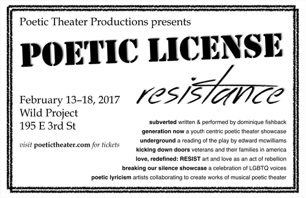
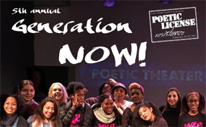
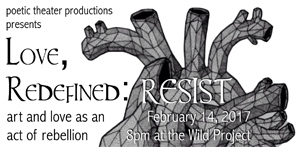
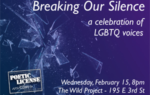
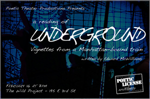
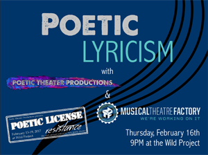
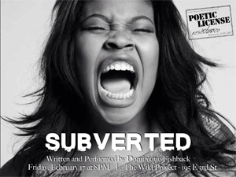
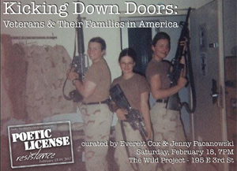

|
Poetic License 2017

February 13-18
Generation NOW!
Poetic Theater Productions’ 5th Annual Generation Now! event features youth created poetic theater. This year’s Generation Now participants include Girl Be Heard, viBe Theater Experience, Truthworker Theatre Company, The Oral History Project, EarSay Youth Voices, and Urban Word NYC’s Khalin Vasquez.
Hosted by Aya Aziz and Samantha Cooper.
Love, Redefined: RESIST
Poetic Theater Productions’ 7th annual celebration of non-commercial, non-traditional love featuring poetic and theatrical remixes, re-imaginings and riffs by more than ten incredible poets and playwrights responding to traditional sonnets and love poems. Inspiration poems and newly developed pieces are presented side-by-side.
This year’s theme of Love, Redefined: RESIST asks how we can look at art and love as an act of rebellion.
Featuring new work by Everett Cox, Anna Gothard, Kate Foster, Catherine Weingarten, Jacqueline Jones LaMon, Nicole Goodwin, Tanaya Winder, Ishmael Islam, Zoë Flowers, Sherri Pullum, Baba Israel, Raquel Almazan, Trace DePass, Mickey Bolmer, Yadira de la Riva, and Becca Travis.
Inspiration pieces by Emily Dickinson, Francis Bellamy, Wendy Cope, Adrienne Rich, Martin Luther King Jr., August Wilson, Rumi, Billie Holiday, William Shakespeare, Margaret Atwood, Andrea Gibson, Frida Kahlo, and more.
And featuring violinist Josh Henderson.
Breaking Our Silence
The 5th Annual Breaking Our Silence is a celebration of LBGTQ voices sharing their experiences of coming out, finding love, breaking the silence and speaking out.
Featuring work by Sam LaRoche, Charan P. Morris, Darcy Bruce, David Cale, and Rae Binstock.
Underground
A hip hop theater guide to the strangers on the train – the people you know and those you thought you knew.
Directed by Rebecca Martinez
Featuring Ryan F. Johnson, Teniece Divya Johnson, Ronnetta Renay, Wade Ray, David Goldberg, Nabil Viñas, Temesgen Tocruray, and Nkosi Nkululeko.
Poetic Lyricism
Artists from Poetic Theater Productions and The Musical Theatre Factory communities team up to present an evening of new collaborative poetic musical theatre.
Featuring fajjr+ali, Andrew J. Hanley, Mike Toperzer, Jack Fellows, Sam LaRoche, Marcus Scott, Colista Turner, Aya Aziz, Toni Blackman, For Feather, Fred Collier, Toni Williams, Lam, Sahir, D-Nasty, Anna, Justin Salusso, Janet Noh, Ashira and more.
SUBVERTED
Back again after another sold out run!
Written and Performed by Dominique Fishback
Directed by Chad Chenail
SUBVERTED portrays the destruction of Black identity as seen through the eyes of Eden, an 18 year-old girl living in any urban city in the USA. Through the colliding viewpoints of 18 friends, family members, and historical figures (all portrayed by actor, writer, and spoken word poet Dominique Fishback) Eden discovers that the promise of “equal opportunity” still, to this day, does not exist. She questions why the people she loves the most continue to live blindly subverted by an unrelenting history that they did not live through, yet inherit and must accept. Eden’s journey will make a difference in our understanding of what true equality actually looks like.
Kicking Down Doors:
Veterans and Their Families in America
Veterans Jenny Pacanowski and Everett Cox curate an evening of poetry, theater and music written by and featuring veterans and their families.
Featuring Hayley Johnson, Corinna Brown, Miriam Acevedo, Jenny Pacanowski, Everett Cox, Robert Sliclen, Molly Pearl, Phil Milio, James Edward Becton, Julie Geisler and more.
|